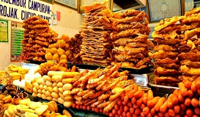
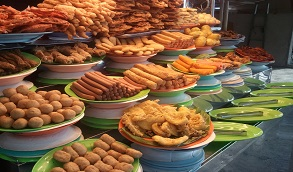
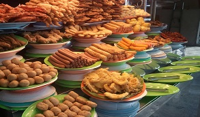
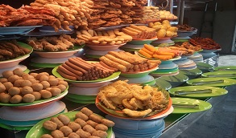

 


Pasembur
This dish is a famous Malaysian-Indian salad in Penang and it is called Pasembur, while other parts of Malaysia
it is more commonly known as Rajak. There are many different types of Rojak available, one of them is Rojak Pasembur
which is vegetable salad. The famous one is found at the Cecil Street Market, other place like Batu Lancang serves
jellyfish with crispy fried dough sheets.
The ingredients of Pasembur salad are sliced cucumber, deep-fried bean curd and tofu puffs, turnip, bean sprouts,
crispy prawn fritters, boiled potatoes, hard boiled eggs and all are dressed in peanut based spicy sauce.
The dish should be eaten before it becomes soggy.